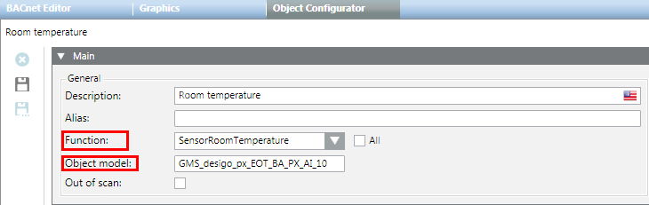

Navigating from Object Configurator to Libraries
Navigate Easily by Function or Object Model
From the Object Configurator tab, you can quickly navigate to the library function or object model of the object currently selected in System Browser.

- In System Browser, select the object whose function or object model you want to view. For example,
Project > Field Networks > [network] > Hardware > [device] > [data point]. - Select the Object Configurator tab.
- In the Main expander, double-click the Function or Object model label.
- The corresponding function or object model is automatically selected in System Browser. The Models & Functions tab becomes available.
Text Catalog Navigation
Each Desigo CC object is assigned to a text catalog with the corresponding texts. For more information, see Text Group Editor.
From the Object Configurator tab, you can quickly navigate to the text groups of the currently selected object.
- In System Browser, select the object whose function or object model you want to view. For example:
Project > Field Networks > [network] > Hardware > [device] > [data point]. - Select the Object Configurator tab.
- In the Properties expander, select the property (for example, Present_Value).
- In the Details expander, double-click the Unit text group label.
- The corresponding text group is selected in System Browser.
- Select the Text Group Editor tab.
- The entries for the selected text group display.